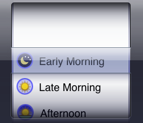
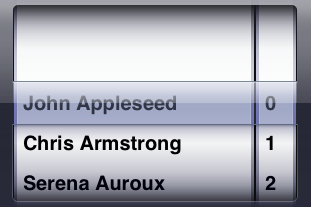

- The iOS components pickers can be addressed using actions for combo components.
- You can select items from pickers that have only one column (4.5) using the actions for combo component in the concrete toolkit. You can also check the existence of items in the picker, check their selection etc.
- To work with pickers that have multiple columns, you should use the actions in the iOS toolkit to select from the picker based on the column value. In this way, you can specify which column the selection should take place in.
Figure 4.5: Single picker (combo component)
|

|
Figure 4.6: Picker with multiple columns
|

|
Hints for working with pickers
- Check text on multi-column pickers:
- If you use the action check text on pickers with multiple columns, the result will be a concatenated value of all columns.
- Grey items not addressable:
- Items that are grey in the picker cannot be checked or selected.
- Index-based selection on infinite pickers:
- Some pickers do not have a finite amount of items - they scroll infinitely. We strongly advise against usin index-based selection or checking on such pickers.
Copyright BREDEX GmbH 2014. Made available under the Eclipse Public License v1.0.